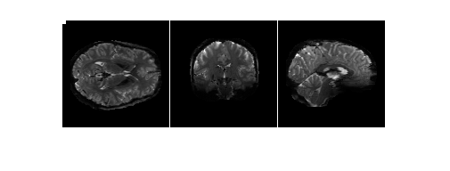
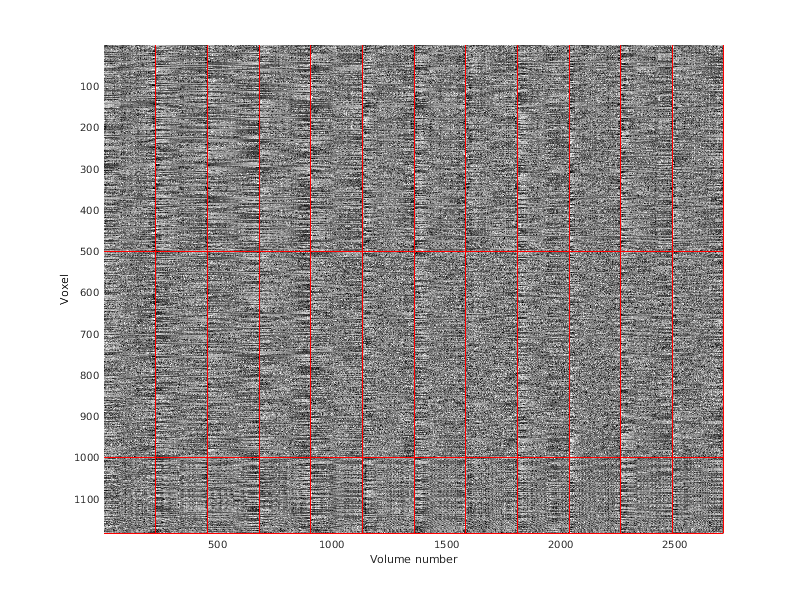

Example 5: Inspect data at scale
Contents
Introduction
Make a movie of brain volumes over time
files = '~/nsd/nsddata_timeseries/ppdata/subj01/func1pt8mm/timeseries/timeseries_session01_*.nii.gz';
outfile = 'testmovie';
fps = 72;
files0 = matchfiles(files);
im = uint8([]);
cnt = 1;
for p=1:length(files0)
data0 = load_untouch_nii(files0{p});
data0 = double(data0.img);
for r=1:size(data0,4)
imA = [];
imA = cat(3,imA,placematrix(zeros(120,120), squeeze(data0(:,:,round(end/2),r))));
imA = cat(3,imA,placematrix(zeros(120,120),rotatematrix(squeeze(data0(:,round(end/2),:,r)),1,2,1)));
imA = cat(3,imA,placematrix(zeros(120,120),rotatematrix(squeeze(data0(round(end/2),:,:,r)),1,2,1)));
im(:,:,cnt) = uint8(255*makeimagestack(imA,[0 2000],1,[1 3]));
cnt = cnt + 1;
if r <= 10
im(1:4,1:4,end) = 255;
end
end
end
figure; imshow(im(:,:,1));

imagesequencetomovie(im,sprintf('%s.mov',outfile),fps);
unix_wrapper(sprintf('HandBrakeCLI -i %s.mov -q 2 --strict-anamorphic -o %s.m4v',outfile,outfile));
calling unix command:
HandBrakeCLI -i testmovie.mov -q 2 --strict-anamorphic -o testmovie.m4v
status of unix command:
0
result of unix command:
[14:13:31] hb_init: starting libhb thread
HandBrake rev5474 (2015021099) - Linux x86_64 - http://handbrake.fr
32 CPUs detected
Opening testmovie.mov...
[14:13:31] hb_scan: path=testmovie.mov, title_index=1
libbluray/bdnav/index_parse.c:162: indx_parse(): error opening testmovie.mov/BDMV/index.bdmv
libbluray/bdnav/index_parse.c:162: indx_parse(): error opening testmovie.mov/BDMV/BACKUP/index.bdmv
libbluray/bluray.c:1725: nav_get_title_list(testmovie.mov) failed (0x7f79b0000900)
[14:13:31] bd: not a bd - trying as a stream/file instead
libdvdnav: Using dvdnav version 4.1.3
libdvdread: Using libdvdcss version 1.2.10 for DVD access
libdvdnav:DVDOpenFileUDF:UDFFindFile /VIDEO_TS/VIDEO_TS.IFO failed
libdvdnav:DVDOpenFileUDF:UDFFindFile /VIDEO_TS/VIDEO_TS.BUP failed
libdvdread: Can't open file VIDEO_TS.IFO.
libdvdnav: vm: failed to read VIDEO_TS.IFO
[14:13:31] dvd: not a dvd - trying as a stream/file instead
[0;39mInput #0, mov,mp4,m4a,3gp,3g2,mj2, from 'testmovie.mov':
[0m [0;39m Metadata:
[0m [0;39m major_brand : qt
[0m [0;39m minor_version : 537199360
[0m [0;39m compatible_brands: qt
[0m [0;39m creation_time : 2018-07-21 19:37:39
[0m [0;39m Duration: [0m [0;39m00:00:37.69 [0m [0;39m, start: [0m [0;39m0.000000 [0m [0;39m, bitrate: [0m [0;39m14295 kb/s [0m [0;39m
[0m [0;39m Stream #0.0 [0m [0;39m(eng) [0m [0;39m: Video: png, rgb24, 363x121, 14285 kb/s [0m [0;39m, 71.94 fps [0m [0;39m, 10k tbn [0m [0;39m
[0m [0;39m Metadata:
[0m [0;39m creation_time : 2018-07-21 19:37:39
[0m[14:13:31] scan: decoding previews for title 1
[14:13:31] scan: 10 previews, 362x120, 71.942 fps, autocrop = 0/0/0/0, aspect 3.02:1, PAR 1:1
[14:13:31] libhb: scan thread found 1 valid title(s)
+ title 1:
+ stream: testmovie.mov
+ duration: 00:00:37
+ size: 362x120, pixel aspect: 1/1, display aspect: 3.02, 71.942 fps
+ autocrop: 0/0/0/0
+ chapters:
+ 1: cells 0->0, 0 blocks, duration 00:00:37
+ audio tracks:
+ subtitle tracks:
[14:13:31] 1 job(s) to process
[14:13:31] starting job
[14:13:31] sync: expecting 2712 video frames
[14:13:31] job configuration:
[14:13:31] * source
[14:13:31] + testmovie.mov
[14:13:31] + title 1, chapter(s) 1 to 1
[14:13:31] + container: mov,mp4,m4a,3gp,3g2,mj2
[14:13:31] + data rate: 14295 kbps
[14:13:31] * destination
[14:13:31] + testmovie.m4v
[14:13:31] + container: MPEG-4 (.mp4 and .m4v)
[14:13:31] * video track
[14:13:31] + decoder: png
[14:13:31] + bitrate 14285 kbps
[14:13:31] + frame rate: same as source (around 71.942 fps)
[14:13:31] + filters
[14:13:31] + Framerate Shaper (0:27000000:375300)
[14:13:31] + frame rate: same as source (around 71.942 fps)
[14:13:31] + Crop and Scale (362:120:0:0:0:0)
[14:13:31] + source: 362 * 120, crop (0/0/0/0): 362 * 120, scale: 362 * 120
[14:13:31] + strict anamorphic
[14:13:31] + storage dimensions: 362 * 120, mod 0
[14:13:31] + pixel aspect ratio: 1 / 1
[14:13:31] + display dimensions: 362 * 120
[14:13:31] + encoder: MPEG-4 (FFmpeg)
[14:13:31] + quality: 2.00 (QP)
[14:13:31] reader: first SCR 0 id 0x0 DTS 0
[14:13:31] encavcodecInit: MPEG-4 ASP encoder
[14:13:31] encavcodec: encoding at constant quantizer 236
[14:13:31] encavcodec: encoding with stored aspect 1/1
Encoding: task 1 of 1, 8.30 %Encoding: task 1 of 1, 18.07 %Encoding: task 1 of 1, 29.09 %Encoding: task 1 of 1, 39.97 %Encoding: task 1 of 1, 51.00 %Encoding: task 1 of 1, 62.09 %Encoding: task 1 of 1, 73.08 %Encoding: task 1 of 1, 84.11 %Encoding: task 1 of 1, 95.02 %[14:13:34] reader: done. 1 scr changes
[14:13:34] work: average encoding speed for job is 0.000000 fps
[14:13:34] mux: track 0, 2712 frames, 791110 bytes, 167.89 kbps, fifo 4096
Muxing: this may take awhile...[14:13:34] sync: got 2712 frames, 2712 expected
[14:13:34] render: lost time: 0 (0 frames)
[14:13:34] render: gained time: 0 (0 frames) (0 not accounted for)
[14:13:34] png-decoder done: 2712 frames, 0 decoder errors, 0 drops
[14:13:34] libhb: work result = 0
Encode done!
HandBrake has exited.
Use a carpet plot (Power NeuroImage 2017) to quickly inspect time-series data
files = '~/nsd/nsddata_timeseries/ppdata/subj01/func1pt8mm/timeseries/timeseries_session01_*.nii.gz';
asegfile = '~/nsd/nsddata/ppdata/subj01/func1pt8mm/aseg.nii.gz';
grayix = [42 3];
wmix = [41 2];
csfix = 24;
maxplot = 500;
aseg = load_untouch_nii(asegfile);
grayvx = picksubset(find(ismember(aseg.img,grayix)),maxplot);
wmvx = picksubset(find(ismember(aseg.img,wmix)),maxplot);
csfvx = picksubset(find(ismember(aseg.img,csfix)),maxplot);
rowbounds = [length(grayvx) length(wmvx) length(csfvx)];
rowbounds = cumsum(rowbounds);
files0 = matchfiles(files);
colbounds = [];
alldata = [];
for p=1:length(files0)
data0 = load_untouch_nii(files0{p});
data0 = squish(double(data0.img),3);
temp = cat(1,data0(grayvx,:),data0(wmvx,:),data0(csfvx,:));
temp = calczscore(temp,2);
alldata = cat(2,alldata,temp);
colbounds = [colbounds size(data0,2)];
end
colbounds = cumsum(colbounds);
figureprep([100 100 800 600],1); hold on;
imagesc(alldata,[-3 3]);
colormap(gray);
axis ij;
axis([.5 size(alldata,2)+.5 .5 size(alldata,1)+.5]);
straightline(rowbounds+.5,'h','r-');
straightline(colbounds+.5,'v','r-');
xlabel('Volume number');
ylabel('Voxel');
